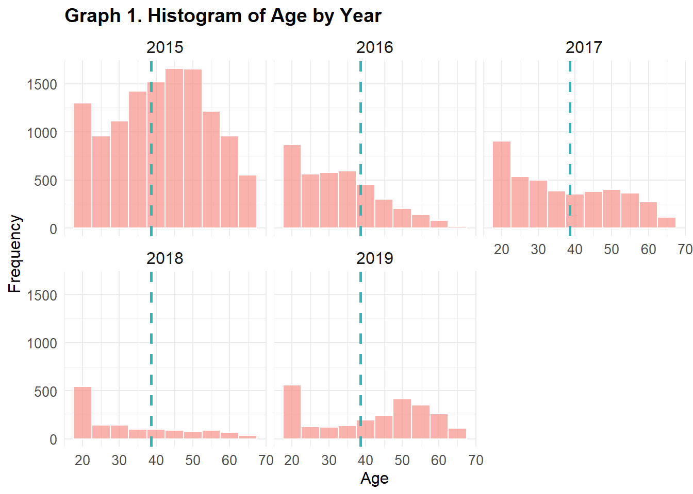
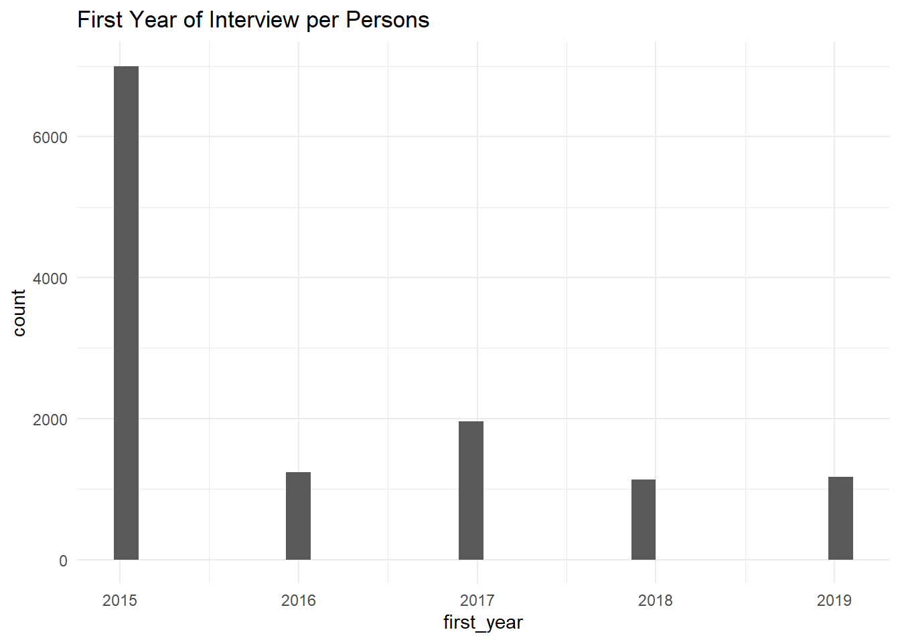
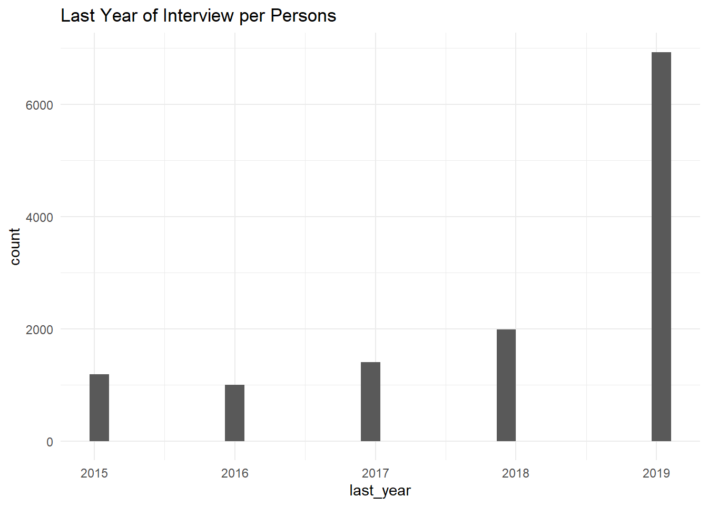

The study builds on previous study by Goerke and Lorenz (2017) and investigates the potential correlation between sickness absence and commute distance using a fixed effects model on SOEP data from 2015 to 2019. While longer commutes are associated with a slight increase in sick days (2.7 additional days for every 17 km), this effect is statistically insignificant. Age is positively correlated with both more sick days (7.4 additional days for every 11 years older) and poorer self-reported health, with a stronger impact on health status. Higher income is associated with fewer sick days and better self-reported health. Full-time employment is associated with a significant increase in sick days (1.49 more days). Additionally, there is a noticeable trend of rising sick days over time.
Introduction
Around the world, researchers are confirming that the negative effects of long commutes are linked to poorer health, increased absenteeism from work due to illness, and higher inactivity, which can lead to obesity and other health issues (Gimenez-Nadal, Molina, and Velilla (2022), Raza et al. (2021), Guo, Tang, and Wang (2020)). Two empirical studies in Germany using SOEP data have formally tested the relationship between commuting and sickness absence (Goerke and Lorenz (2017); Ommeren and Gutiérrez-i-Puigarnau (2011)), and their conclusions differ. While the former study identifies a positive correlation between commuting distance and sickness absence in Germany, the latter finds no such relationship. However, they observed that employees who commute long distances are absent approximately 20% more often than those who commute up to 10 km.
This Project
In this project, I aim to study the relationship between Health and Commute using the German Socio-Economic Panel Survey (SOEP). The SOEP is a comprehensive longitudinal survey conducted annually that has been running since 1984, focusing on the socio-economic conditions of households in Germany. Each year, the survey collects data from approximately 30,000 individuals in around 15,000 households using mixed-mode design, including face-to-face interviews, telephone interviews, online surveys, and paper-based interviews. The data collection process is designed to ensure the survey’s longitudinal nature, allowing for the observation of social and economic changes over time. The access to the data is restricted to researchers for scientific purposes or for teaching purposes. Strict confidentiality measures are in place, including compliance with German data protection laws, prohibiting data sharing with third parties and ensuring secure storage.
Fig 1. SOEP Topics
Study Hyphothesis and Questions
The literature review indicates that a longer commute distance is associated with a higher number of reported sick days. Based on this evidence, the study employs the following hypotheses:
Null Hypothesis: There is no relationship between commute distance and the number of days off from work due to sickness.
Alternative Hypothesis: A longer commute distance is associated with a higher number of days off from work due to sickness.
Furthermore the study questions are driven as follows:
How do commuting characteristics, such as distance and time, impact various health outcomes, including sick days and current health status?
How does this impact vary across different demographic groups, such as age and gender, or according to various economic factors, such as income and employment status?
Methodology
This study builds on the work of Goerke and Lorenz (2017), who conducted a comprehensive analysis using SOEP data from the years 2003 to 2011. In their research, focused on commuting distance and sickness absence as key variables, while also considering personal characteristics and job-related indicators. Their analysis employed various econometric models, including Negative Binomial Regression and Fixed-Effects Least Squares Models.
Although this study will not delve into as much detail as the aforementioned research, it will extend the analysis of the relationship between commuting distance and sickness absence using data from five years (2015 to 2019) through Mixed Effects Model Analysis. Additionally, the study will examine various demographic and economic indicators, including age, gender, income, and employment status.
The analysis consists of two parts. Descriptive analysis offer a snapshot of the data, providing a summary of its main variables. In contrast, mixed effects analysis delivers a deeper understanding by estimating the effects of predictors while accounting for random variability. This approach leads to more nuanced conclusions about the relationships within the data, which are crucial for decision-making and hypothesis testing.
Due to inconsistencies in the data, such as missing commute distance information for 2016 and 2018, the chosen model is well-suited for handling unequally spaced time points, time invariant and missing data. To avoid the influence of COVID-19, the year 2020 will not be included in the analysis, even though data for that year is available.
I began by extracting data from a comprehensive dataset, focusing on variables pertinent to the study. Initially, 13 variables were identified using the Code Book (Bartels, Nachtigall, and Schwinn (2023)) and imported from a large dataset. The data was then filtered to include only individuals within the economically active age group (18-65) and for the years relevant to the study. The SOEP survey dataset includes negative codes to denote labels where data is unavailable, irrelevant, or not applicable for certain periods. To facilitate accurate analysis in R, these negative coded labels are converted to NA to represent missing data.
Show code
setwd("C:/Users/udwal/Documents/Studies_Viadrina/Becoming Data Fluent/Fluent2024/Final Project")# Getting individual data from plsoep_df <-read_dta("pl.dta", col_select =c(syear, ple0055, ple0046, ple0008, ple0072, plb0158, plb0592, pid, plb0471_h, plb0031_h, plb0022_h))# Getting the individual data from pequiv that were not in pldata_pequiv <-read_dta("pequiv.dta", col_select =c(pid, syear, d11101, d11102ll))# Joining the two datasetcombined_df <- soep_df %>%full_join(data_pequiv, by =c("pid", "syear"))# Converting negative labels into NA as preparation of datacombined_df[combined_df <0] <-NA# Renaming columns for ease of usecombined_df <- combined_df %>%rename(hospital_stays = ple0055,sick_days_LY = ple0046,health_state = ple0008,doctor_visit_L3 = ple0072,commute_km = plb0158,commute_min = plb0592,gender = d11102ll,age = d11101,income = plb0471_h,job_change = plb0031_h,employment_status = plb0022_h)# Filtering out the years only relevant to the research questionscombined_df <- combined_df %>%filter(age >=18& age <=65, syear >=2015& syear <=2020)# sick days are recorded for the previous year, hence shifting the values to the previous year so the relationship with other variables can be analyzed without lag in the data.combined_df <- combined_df %>%mutate(syear =as.numeric(syear)) %>%mutate(sick_days_LY =as.numeric(sick_days_LY)) %>%group_by(pid) %>%arrange(pid, syear) %>%# Create the previous year variablemutate(sick_days_PY = dplyr::lead(sick_days_LY, n =1)) %>%# Fill NA values with the most recent non-NA valuefill(sick_days_PY, .direction ="up") %>%# Ungroupungroup() %>%# 2020 was pulled only for the reason to get 2019 sick days, hence it can be filtered outfilter(syear !=2020)
Since the Sick Days values are recorded for the previous year, the Sick Days variable was shifted by one year. This adjustment allowed it to align the Sick Days values with other variables from the same year, such as commute distance. Consequently, the data for year 2020 is removed to ensure that the analysis accurately reflects the year 2019. This way, both sick days and commute distance data correspond to the same time period, enabling a more accurate analysis.
Show code
# similar number of participants across the yearstable(combined_df$syear)# a majority of the participants' fist year is 2015 followed by 2017combined_df %>%group_by(pid) %>%summarise(first_year =min(syear)) %>%ggplot(aes(x=first_year)) +geom_histogram() +theme_minimal() +labs(title ="First Year of Interview per Persons")
Show code
# majority of the participants' last interview was in 2019combined_df %>%group_by(pid) %>%summarise(last_year =max(syear)) %>%ggplot(aes(x=last_year)) +geom_histogram() +theme_minimal() +labs(title ="Last Year of Interview per Persons")
Show code
#filtering unique IDsunique_ids_df <- combined_df %>%distinct(pid, .keep_all =TRUE)distinct_count <-length(unique(combined_df$pid))mean_age <-round(mean(combined_df$age), 1)# calculating gender ratiounique_ids_df$gender <-as.numeric(unique_ids_df$gender)gender_counts <- unique_ids_df %>%filter(!is.na(gender)) %>%count(gender)num_females <- gender_counts$n[gender_counts$gender ==2]num_males <- gender_counts$n[gender_counts$gender ==1]# Calculate gender ratiogender_ratio <-round((num_females / num_males), 2)# Age distributionggplot(unique_ids_df, aes(x = age)) +geom_histogram(binwidth =5, fill ="#f89089", color ="white", alpha =0.7) +geom_vline(aes(xintercept =mean(age)), color ="#32b6b8", linetype ="dashed", size =1) +facet_wrap(~syear) +labs(title ="Graph 1. Histogram of Age by Year",x ="Age",y ="Frequency") +theme_minimal() +theme(strip.text =element_text(size =12),axis.text =element_text(size =10),axis.title =element_text(size =12),plot.title =element_text(size =14, face ="bold"))

The initial dataset comprised 72213 observations across 13 variables, with 24314 unique personal IDs. Visualization of participants’ first and last year of interviews indicates that a high number of participants were in 2015 compared to the other years. However this was balanced in the final dataset after the cleaning process which resulted majority participated throughout all five years of the study period. This continuity is crucial for ensuring unbiased results. The participants average age is 40.8 and the gender ratio is 0.99, indicating a slightly lower number of female participants compared to male participants.
Show code
# look at the percentage of unemployed and NAs each year# Calculate the percentage of "Nicht erwerbstaetig" by yearcombined_percentage_by_year <- unique_ids_df %>%group_by(syear) %>%summarize(total =n(),combined_count =sum(as_factor(employment_status) %in%c("[9] Nicht erwerbstaetig") |is.na(employment_status), na.rm =TRUE),combined_percentage =round((combined_count / total) *100, 2))mean_percent <-round(mean(combined_percentage_by_year$Percent), 2)# Rename columns for display in the tablecolnames(combined_percentage_by_year) <-c("Year", "Total Participants", "Unemployed Count", "Percent")kable(combined_percentage_by_year, caption ="Table 1. Percentage of unemployed and NAs") %>%kable_styling(bootstrap_options =c("striped", "hover", "condensed", "responsive")) %>%row_spec(0, background ="#f9918a", color ="white", bold =TRUE)
# 3: Work-from-Home Status We have data on work-from-home (WFH) status only for the year 2020, with no records of WFH in previous years. Since 2020 is not the primary focus of this study, we assume that WFH was not an option during the years of interest. Consequently, we will exclude the WFH information from the dataset.# 4: Removing outlieres in Incomeggplot(combined_df, aes(x = income)) +geom_boxplot()
On average, NA of participants each year are either unemployed or have missing data for other reasons. Additionally, an average of 8.93 of participants change jobs (employers) each year. Given the high rate of job changes, it is important to also analyze changes in workplace location. Although the SOEP does not record data on workplace changes directly, this can be inferred from the commute distance to work. The survey question asks: "How far (in kilometers) is it from where you live to where you work?" Any change in workplace is expected to be reflected in changes to this distance. Notably, there is no recorded data on working from home (WFH) for the years of interest in this analysis.
According to the German Statistics Office, the average number of sickness absence days in 2019 was 11. To ensure the validity of our analysis, we have addressed outliers in the data. We assume that extreme values of sick days could either indicate chronic illness or data entry errors. Therefore, we have excluded sickness absence days exceeding two months from our dataset.
Show code
# after filtering out unemployed participants and negative labelscombined_df$employment_status <-as.factor(combined_df$employment_status)filtered_data <- combined_df %>%filter(!is.na(employment_status) & employment_status !="[9] Nicht erwerbstaetig")health_variables <- filtered_data %>%filter(!is.na(sick_days_PY) &!is.na(hospital_stays) &!is.na(doctor_visit_L3) &!is.na(health_state)) %>%mutate(across(c(hospital_stays, sick_days_LY, doctor_visit_L3, health_state), ~as.numeric(zap_labels(.))))# plotting to see any outlierslong_df <- health_variables %>%pivot_longer(cols =c(hospital_stays, doctor_visit_L3, sick_days_PY, health_state),names_to ="variable",values_to ="value")ggplot(long_df, aes(x = variable, y = value)) +geom_boxplot(fill ="#32b6b8", color ="#f78f88") +facet_wrap(~variable, scales ="free_y", ncol =1) +theme_minimal() +labs(title ="Graph 2. Distribution of Health-related Variables",x ="",y ="Value") +theme(axis.text.x =element_blank(),strip.text =element_text(size =12, face ="bold"),plot.title =element_text(hjust =0.5))
To select the key health variables for analysis, we examined the trends over time for four variables: 1. Doctor visits in the last 3 months, 2. Number of hospital stays, 3. Number of sickness absence days, and 4. Self-reported health status, ranging from 1 (highest) to 5 (lowest). The trends for these variables did not show significant similarities, and none of the variables appeared anomalous. Consequently, we selected the “Number of sickness absence days” and “Self-reported health status” for the analysis, as these are commonly used by researchers, including Goerke and Lorenz (2017), in their studies utilizing SOEP data.
Show code
# Calculate summary statistics for each variabledv_summary <-summary(health_variables$doctor_visit_L3)hos_summary <-summary(health_variables$hospital_stays)sd_summary <-summary(health_variables$sick_days_PY)hes_summary <-summary(health_variables$health_state)# Combine the results into a data framesummary_table <-data.frame(Statistic =names(dv_summary),Doctor_Visits_L3 =as.numeric(dv_summary),Hospital_Stays =as.numeric(hos_summary),Sick_Days_PY =as.numeric(sd_summary),Health_Status =as.numeric(hes_summary))# Create and display a table using gtsummary_table_gt <- summary_table %>%gt() %>%tab_header(title ="Table 2. Summary Statistics for Health Variables") %>%cols_label(Statistic ="Statistic",Doctor_Visits_L3 ="Doctor Visits (L3)",Hospital_Stays ="Hospital Stays",Sick_Days_PY ="Sick Days",Health_Status ="Health Status") %>%fmt_number(columns =vars(Doctor_Visits_L3, Hospital_Stays, Sick_Days_PY, Health_Status),decimals =1) %>%tab_style(style =list(cell_fill(color ="#f78f88"),cell_text(weight ="bold", color ="white")),locations =cells_column_labels(columns =everything()))# Print the gt tablesummary_table_gt
Table 2. Summary Statistics for Health Variables
Statistic
Doctor Visits (L3)
Hospital Stays
Sick Days
Health Status
Min.
1.0
1.0
1.0
1.0
1st Qu.
2.0
1.0
5.0
2.0
Median
3.0
1.0
13.0
3.0
Mean
4.8
1.4
36.8
3.0
3rd Qu.
5.0
1.0
30.0
4.0
Max.
80.0
100.0
365.0
5.0
Show code
# Trend over time by health variablesggplot(long_df, aes(x = syear, y = value)) +geom_line(size =1, color ="#32b6b8") +facet_wrap(~ variable, scales ="free_y", ncol =2) +labs(title ="Graph 3. Trend of Average Health Variables Over Time",x ="Year",y ="Average Value") +theme_minimal() +theme(strip.background =element_rect(fill ="#f9918a"),strip.text =element_text(face ="bold", color ="white"))
After filtering the data for health variables and excluding the two health variables no longer needed for the study, total of 21899 observations across 11 variables remained.
Show code
# categorizing commute distance.filtered_data <- filtered_data %>%filter(commute_km <=200) %>%# removing one outlier above 200 kmmutate(commute_category =case_when( commute_km >=0& commute_km <10~"Non-commuter", commute_km >=10& commute_km <25~"Short Distance", commute_km >=25& commute_km <50~"Medium Distance", commute_km >=50~"Long Distance",TRUE~NA_character_))# average travel time by category of distancemean_commute_by_category <- filtered_data %>%group_by(commute_category) %>%summarize(mean_commute_min =mean(commute_min, na.rm =TRUE)) %>%mutate(mean_commute_min =round(mean_commute_min, 1)) %>%rename("Commuter Type"= commute_category,"Avg Commute Time (min)"= mean_commute_min) %>%arrange(desc(`Avg Commute Time (min)`))# just extracting the valuelong_dist_time <- mean_commute_by_category %>%filter(`Commuter Type`=="Long Distance") %>%summarise(mean_travel_time =mean(`Avg Commute Time (min)`, na.rm =TRUE)) %>%pull(mean_travel_time)# just extracting the value non_commuter_time <- mean_commute_by_category %>%filter(`Commuter Type`=="Non-commuter") %>%summarise(mean_travel_time =mean(`Avg Commute Time (min)`, na.rm =TRUE)) %>%pull(mean_travel_time)kable(mean_commute_by_category, caption ="Table 3. Avg Commute Time by Commuter Type") %>%kable_styling(bootstrap_options =c("striped", "hover", "condensed", "responsive")) %>%row_spec(0, background ="#f9918a", color ="white", bold =TRUE)
Table 3. Avg Commute Time by Commuter Type
Commuter Type
Avg Commute Time (min)
Long Distance
71.4
Medium Distance
43.1
Short Distance
27.8
Non-commuter
14.0
First the commute distance is categorized based on the same categorization as Goerke and Lorenz (2017). Then average travel time by different commute distance category was calculated. Which shows Long Distance Commuter traveling on average 71.4 minutes one way whereas people commute up to 10 kms with on average 14 minutes of travel time.
Show code
# removing outlier in commute time before plotting relationship with commute distancemean_min <- filtered_data %>%summarize(mean =mean(commute_min, na.rm =TRUE)) %>%pull(mean)filtered_data <- filtered_data %>%filter(commute_min <150)ggplot(filtered_data, aes(x = commute_km, y = commute_min)) +geom_point(color ="#f9918a") +theme_minimal() +labs(title ="Graph 4. Relationship Between Commute Distance and Time", x ="Commute distance in km", y ="Commute time in minutes") +geom_smooth(method ="loess", span =0.8, se =FALSE, color ="#32b6b8")
Show code
filtered_data <- filtered_data %>%mutate(pid =as_factor(pid)) %>%mutate(pid =as.character(pid))# each additional km traveled increases the commute time by approximately 1.15 minutes. model_ME <-lmer(commute_min ~ commute_km -1+ (1| pid), data = filtered_data)model_summary <-summary(model_ME)coefficients_df <-as.data.frame(model_summary$coefficients)colnames(coefficients_df) <-c("Estimate", "Std. Error", "t value")# Display the coefficients with kable and apply stylingkable(coefficients_df, caption ="Table 4. Model Summary: Coefficients") %>%kable_styling(bootstrap_options =c("striped", "hover", "condensed", "responsive")) %>%row_spec(0, background ="#f9918a", color ="white", bold =TRUE)
Table 4. Model Summary: Coefficients
Estimate
Std. Error
t value
commute_km
1.147848
0.0077631
147.8588
Lastly, relationship between commute distance and travel time was analyzed. The linear mixed model analyzing the relationship between commute distance (in kilometers) and commute time (in minutes), while accounting for individual differences. The model shows a strong positive relationship between distance and time, with each kilometer of commute distance associated with an increase of about 1.2 minutes in commute time (fixed effect estimate). The random effects indicate substantial variation between individuals (pid), with a standard deviation of 13.73 minutes which is (51.81) of the mean, suggesting a significant degree of variability relative to the average commute time. These could be factors specific to each person (like mode of transportation or route choices) play a significant role in determining commute time (Liao et al. (2020)). The high t-value (164.8) for the fixed effect suggests that the relationship between distance and time is statistically significant. Overall, this model demonstrates that while commute distance is a strong predictor of commute time, individual factors also contribute substantially to the variation in commute duration.
Final Dataset
After the data preparation stage, the dataset consists of 12 columns, including 11 original variables and one additional categorical column. The dataset contains 11698 observations that have been filtered and cleaned to ensure a balanced dataframe with no missing values. The variables are categorized into three groups: Health, Commute, and Socio-economic.
The analysis uses Sickness absence notified to the employer as the dependent variable, with Self-reported health status serving as a reference variable. After identifying a strong positive linear relationship between commute distance and commute time, commute distance is selected as the independent variable. Additionally, the analysis considers other variables such as gender, age, income, employment status, and employer change.
Table 5. Summary Statistics of Sick Days by Commuter Category
Commute Category
Summary Statistics
Number of Participants
Percentage (%)
Mean
SD
Min
Max
Full Sample
10.50
10.23
1.00
59.00
11,698
100.00
Non-commuter
10.66
10.44
1.00
59.00
5,272
45.07
Short Distance
10.45
10.05
1.00
56.00
3,836
32.79
Medium Distance
10.20
9.98
1.00
58.00
2,014
17.22
Long Distance
10.42
10.20
1.00
58.00
576
4.92
Only 4.9% of the total participants are long-distance commuters, traveling more than 50 kilometers one way to work. Table 4 compares the average number of sick days across different commuter categories and does not show significant differences between them. However, high standard deviations across all categories indicate a wide range of commute distances within each group.
Show code
# gender difference in commute distance and sick daysgender_labels <-c("1"="Male","2"="Female")# Apply the mappingfiltered_data <- filtered_data %>%mutate(gender_label =factor(gender, levels =names(gender_labels), labels = gender_labels), na.rm =TRUE) %>%filter(!is.na(gender_label))# commute distance histogramggplot(filtered_data, aes(x = commute_km, fill = gender_label)) +geom_density(alpha =0.8, color ="white") +theme_minimal() +labs(title ="Graph 5. Commute Distance Distribution by Gender",x ="Commute Distance (km)",y ="Density",fill ="Gender") +theme(axis.text.x =element_text(angle =45, hjust =1),legend.position ="bottom")
Graph 5 shows that women commute significantly more than men within 20 kilometers, while men tend to commute longer distances. These findings align with the results from Chidambaram and Scheiner (2021), which explain that men are more likely to drive for longer commutes. In contrast, women often engage in trip chaining (combining multiple trips) due to childcare responsibilities, which can affect their overall commuting behavior.
Show code
# sick days histogramggplot(filtered_data, aes(sick_days_PY, fill = gender_label)) +geom_density(alpha =0.7, color ="white") +theme_minimal() +labs(title ="Graph 6. Sickness Absence in Days", x ="Sick Days",y ="Density",fill ="Gender") +theme(axis.text.x =element_text(angle =45, hjust =1),legend.position ="bottom")
In contrast, men tend to take shorter sick leave (fewer than 10 days), while women are more likely to take longer sick leave. This is interesting because many studies show that women generally have higher rates of sickness absence compared to men. For instance, a study by Gimenez-Nadal, Molina, and Velilla (2022) found that using data from2011 to 2017, a 1% increase in workers’ daily commute correlates with an increase in annual sickness absence of 0.018% for male workers and 0.027% for female workers.
Show code
ggplot(filtered_data, aes(x =factor(health_state), y = commute_km)) +geom_boxplot(color ="#f9918a") +theme_minimal() +labs(title ="Graph 7. Commute Distance by Health Status",x ="Health Status", y ="Commute Distance (km)") +coord_cartesian(ylim =c(0, 100))
Graph 7 demonstrates significant variability in commute distances, particularly among individuals categorized under “very good” and “satisfactory” health states. This suggests that people within these health categories may have diverse commuting behaviors or requirements. Interestingly, individuals who self-report as being in a “bad” health state tend to commute shorter distances. This observation could suggest a case of reverse causation, where long commutes do not necessarily deteriorate health; rather, those with poorer health may choose, or be forced, to undertake shorter commutes (Raza et al. (2021)).
Show code
# commuter type by employment status# giving English labels as the original is in Germanemployment_status_labels <-c("1"="Full-time","2"="Part-time","3"="Ausbildung","4"="Low-income earner","8"="Workshop for handicapped")# Apply the mappingfiltered_data <- filtered_data %>%mutate(employment_status =factor(employment_status, levels =names(employment_status_labels), labels = employment_status_labels))summarized_data <- filtered_data %>%group_by(commute_category, employment_status) %>%summarize(count =n(), .groups ='drop')ggplot(summarized_data, aes(x = employment_status, y = count, fill = commute_category)) +geom_col(position ="stack") +theme_minimal() +labs(title ="Graph 8. Employment Status by Commute Categories",x ="Employment Status", y ="Count", fill ="Commute Category") +scale_fill_manual(values =c("#80bcd2", "#f1dedb", "#f9918a", "#32b6b8", "#a7641c")) +theme(axis.text.x =element_text(angle =45, hjust =1),legend.position ="bottom")
Full-time employees constitute the largest group of long- and medium-distance commuters. In contrast, low-income earners and individuals undergoing Ausbildung typically commute less than 25 km. According to Goerke and Lorenz (2017), this may be because full-time employees are more likely to be compensated for long commutes, making the trade-off between private time and commuting more acceptable.
Show code
# income and commuter type correlation: weak postive at cor = 0.19cor_km_income <-cor(filtered_data$commute_km, filtered_data$income, use ="complete.obs")ggplot(filtered_data, aes(x = commute_km, y = income)) +geom_point(color ="#f9918a") +geom_smooth(method ="loess", span =0.8, se =FALSE, color ="#32b6b8") +theme_minimal() +labs(title ="Graph 9. Commute Distance and Income Correlation", x="Commute Ditsance (km)", y ="Income")
In terms of income, it shows a correlation coefficient of 0.19, indicating weak positive correlation. However, commuting distances up to an average of 100 km are generally associated with higher correlation. Beyond this distance, income tends to decline as the distance increases.
In our data, the average commuting trip length did not see a significant increase between 2015 and 2019. The average one-way commuting distance of workers is 15.75 kilometres. This is in line with a range of other studies employing German data (Hedemann (n.d.)). Hence, our sample selection is likely unrelated to commuting behaviour.
Mixed Effects Analysis
In this analysis, I used a statistical technique a linear mixed model to explore how different factors affect the number of sick days people take from work. This model helps to consider both individual differences and overall trends. I included variables such as commute distance, income, age, job changes, and whether individuals work full-time. I also accounted for changes over time by incorporating the year into the model. To ensure our results were accurate, I standardized these factors, which means I compared them on a common scale. This approach allowed me to understand how each factor, like a longer commute or higher income, influences sick days while also accounting for variations among different people. The main health variable is sickness absence days (Model1), but also to compare I included Self-reported Health State (Model2) in the analysis.
Show code
#Creating dummy variable for job changefiltered_data$job_change <-as.numeric(filtered_data$job_change)filtered_data <- filtered_data %>%mutate(job_change_dummy =ifelse(job_change ==1, 1, 0),gender_dummy =ifelse(gender_label =="Male", 1, 0),full_time_dummy =ifelse(employment_status =="Full-time", 1, 0))# linear mixed-effects models fitting # Prepare the data by scaling the continues variablesfiltered_data <- filtered_data %>%mutate(commute_km_z =scale(commute_km),age_z =scale(age),income_z =scale(income),syear_z =scale(syear))# Model 1: Number of Days Off Workmodel1 <-lmer(sick_days_PY ~ commute_km_z + gender_dummy + age_z + income_z + job_change_dummy + full_time_dummy + syear_z + (1|pid), data = filtered_data)# Model 2: Current Health Statemodel2 <-lmer(health_state ~ commute_km_z + gender_dummy + age_z + income_z + job_change_dummy + full_time_dummy + syear_z + (1|pid), data = filtered_data)# Check summariessummary(model1)summary(model2)
Both models analyze data from 11,495 observations across 6,649 unique individuals. The variables were standardized to ensure they are on a common scale for analysis. To interpret the results in the context of the original data, the effects are expressed in terms of standard deviations of the variables. The key findings are as follows:
The much larger random effects in Model 1 suggest that sickness absence varies more between and within individuals compared to self-reported health state.
Longer commutes are associated with slightly more sick days, every 17 km increase in distance associated with 2.7 more sick days but have minimal impact on self-reported health. However the findings are statistically not significant.
Gender has a small negative effect on sick days (males taking fewer sick days (0.3) than women) but negligible effect on self-reported health.
Age is positively associated with both more sick days (every 11 years increase in age associated with people take about 7.4 more sick days) and worse self-reported health, with a stronger relative effect on health status.
Higher income is associated with fewer sick days and better self-reported health. The effect is relatively strong in both models.
Job change is associated with fewer sick days but has minimal impact on self-reported health.
Full-time employment is strongly associated with more sick days (1.49 more sick days than other groups) but has negligible impact on self-reported health.
There’s a trend of increasing sick days (0.8 days every 1.6 years) over time, but minimal change in self-reported health status.
The models show different sensitivity to predictors, with sickness absence (Model 1) being more responsive to work-related factors (full-time status, job change) compared to self-reported health status (Model 2).
Show code
# tidying model resultfixed_effects1 <-tidy(model1, effects ="fixed")fixed_effects2 <-tidy(model2, effects ="fixed")# Creating result tablesimple_table <-bind_rows( fixed_effects1 %>%mutate(Model ="Model 1"), fixed_effects2 %>%mutate(Model ="Model 2")) %>%mutate(Variable =case_when( term =="commute_km_z"~"Commute Distance", term =="gender_dummy"~"Gender", term =="age_z"~"Age", term =="income_z"~"Income", term =="job_change_dummy"~"Job Change", term =="full_time_dummy"~"Full-time Status", term =="syear_z"~"Year", term =="(Intercept)"~"Intercept"),Effect =ifelse(statistic >1.96| statistic <-1.96, ifelse(estimate >0, "Increase", "Decrease"), "No significant effect"),Significance =ifelse(abs(statistic) >3.291, "***",ifelse(abs(statistic) >2.576, "**",ifelse(abs(statistic) >1.96, "*", ""))),`Relative Impact`=abs(estimate) /max(abs(estimate))) %>%select(Model, Variable, Effect, Significance, `Relative Impact`) %>%arrange(Model, desc(`Relative Impact`))# Display the tablekable(simple_table, format ="html", escape =FALSE, caption ="Table 7. Mixed Effect Model Summary") %>%kable_styling(bootstrap_options =c("striped", "hover", "condensed"), full_width =TRUE) %>%column_spec(5, width ="100px",color ="white",background =spec_color(simple_table$`Relative Impact`, end =0.7)) %>%row_spec(0, background ="#f9918a", color ="white", bold =TRUE) %>%row_spec(9, extra_css ="border-top: 2px solid black;")
Table 7. Mixed Effect Model Summary
Model
Variable
Effect
Significance
Relative Impact
Model 1
Intercept
Increase
***
1.0000000
Model 1
Full-time Status
Increase
***
0.1501354
Model 1
Income
Decrease
***
0.1455591
Model 1
Job Change
Decrease
**
0.0748561
Model 1
Age
Increase
***
0.0684733
Model 1
Year
Increase
***
0.0513631
Model 1
Gender
No significant effect
0.0316477
Model 1
Commute Distance
No significant effect
0.0159263
Model 2
Intercept
Increase
***
0.2438212
Model 2
Age
Increase
***
0.0205941
Model 2
Income
Decrease
***
0.0112824
Model 2
Job Change
No significant effect
0.0017290
Model 2
Commute Distance
No significant effect
0.0008270
Model 2
Year
No significant effect
0.0007459
Model 2
Full-time Status
No significant effect
0.0004177
Model 2
Gender
No significant effect
0.0002917
Conclusion
Research globally suggests that longer commutes are linked to higher rates of sickness absence. However, an analysis using the SOEP data in Germany reveals different findings. This study aimed to extend the analysis of the relationship between commute distance and sickness absence to more recent years (2015-2019) using longitudinal data.
Descriptive analysis confirmed that full-time employees are the primary long- and medium-distance commuters, with their income positively correlating with commute distances up to 100 km. Generally, women tend to have shorter commutes, while men usually take fewer sick days. Although there are no significant differences in sickness absence between commuter types, within-group analysis shows that a higher number of standard deviations in sick days indicates greater variability. Additionally, individuals who rate their health as poorer are more likely to avoid longer commutes.
Sickness absence varies significantly between and within individuals, whereas self-reported health state shows less variation. Longer commutes slightly increase sick days (2.7 more for every 17 km), but this effect is statistically insignificant. Gender has a minor effect on sick days, with males taking fewer sick days (0.3 days less than females). Age is associated with more sick days (7.4 more for every 11 years older) and worse self-reported health, with a stronger impact on health status. Higher income correlates with fewer sick days and better self-reported health, showing a strong effect in both models. Full-time employment is linked to significantly more sick days (1.49 more). There is a trend of increasing sick days over time, but self-reported health remains stable. Overall, sickness absence is more sensitive to work-related factors than self-reported health.
Limitations and Next Steps
The study only took account of commute distance as the key dependent variables However the research showing the significant effects of commute mode and travel time (Guo, Tang, and Wang (2020)). Different modes of commuting had varying impacts on emotional wellbeing. For example, walking commuters reported higher life satisfaction compared to car users, while bicycle commuting was positively related to quality of life. Conversely, car commuters experienced lower positive emotions with longer commutes compared to those using public transport or multimodal commuting (Liu, Ettema, and Helbich (2022)).
Another limitation of this study is the choice and interpretation of the mixed effects model and its results. Although I compared results from both fixed effects and mixed effects models and found the latter more suitable for unbalanced panel data due to its ability to account for time-invariant variables, unobserved variables and randomness, this was my first experience with mixed effects models on an unbalanced panel. As I am still gaining experience in this area, there may be limitations in my understanding of the possible models and their interpretation. I welcome any suggestions on how I could enhance my approach and address these potential limitations.
Based on the identified limitations, I suggest the following next steps:
Include Commute Mode in the Analysis: Incorporate data on different commute modes to examine how various modes affect both positive and negative outcomes related to sickness absence and self-reported health.
Analyze COVID Impact: Although this study intentionally excluded the effects of COVID, future research could benefit from including data from COVID-affected years. Comparing pre- and post-COVID states could provide valuable insights into how the pandemic has influenced commuting and health outcomes.
Address Gaps in Longitudinal Data: For longitudinal surveys like SOEP with missing years, explore and identify the best methods and models for handling gaps in data to improve the robustness and accuracy of future analyses.
Investigate Within-Group Variations: The data showed significant within-group variations the in key variables. Further analysis is needed to identify the underlying causes of these variations and understand their implications.
# a maority of the participants' fist year is 2015 followed by 2017combined_df %>%group_by(pid) %>%summarise(first_year =min(syear)) %>%ggplot(aes(x=first_year)) +geom_histogram() +theme_minimal() +labs(title ="First Year of Interview per Persons")

Show code
# majority of the participants' last interview was in 2019combined_df %>%group_by(pid) %>%summarise(last_year =max(syear)) %>%ggplot(aes(x=last_year)) +geom_histogram() +theme_minimal() +labs(title ="Last Year of Interview per Persons")

Number of participants each year
Show code
# similar number of participants across the yearstable(combined_df$syear)
Chidambaram, Bhuvanachithra, and Joachim Scheiner. 2021. “Work-Trip Mode Choice in Germany – Affected by Individual Constraints or by Partner Interaction?”Travel Behaviour and Society 24: 231–44. https://doi.org/https://doi.org/10.1016/j.tbs.2021.04.007.
Gimenez-Nadal, J., José Molina, and Jorge Velilla. 2022. “Commuting Time and Sickness Absence of US Workers.”Empirica 49 (August): 1–29. https://doi.org/10.1007/s10663-022-09534-z.
Guo, Murong, Kuang Tang, and Zicheng Wang. 2020. “Commuting Time and Sickness Absence in China: Rural/Urban Variations and Hukou Impacts.”The Economic and Labour Relations Review 31 (1): 76–95. https://doi.org/10.1177/1035304619899770.
Liao, Yuan, Jorge Gil, Rafael H. M. Pereira, Sonia Yeh, and Vilhelm Verendel. 2020. “Disparities in Travel Times Between Car and Transit: Spatiotemporal Patterns in Cities.”Scientific Reports 10 (1): 4056. https://doi.org/10.1038/s41598-020-61077-0.
Liu, Jiakun, Dick Ettema, and Marco Helbich. 2022. “Systematic Review of the Association Between Commuting, Subjective Wellbeing and Mental Health.”Travel Behaviour and Society 28: 59–74. https://doi.org/https://doi.org/10.1016/j.tbs.2022.02.006.
Ommeren, Jos N. van, and Eva Gutiérrez-i-Puigarnau. 2011. “Are Workers with a Long Commute Less Productive? An Empirical Analysis of Absenteeism.”Regional Science and Urban Economics 41 (1): 1–8. https://doi.org/https://doi.org/10.1016/j.regsciurbeco.2010.07.005.
Raza, Auriba, Anna Pulakka, Linda L. Magnusson Hanson, Hugo Westerlund, and Jaana I. Halonen. 2021. “Commuting Distance and Behavior-Related Health: A Longitudinal Study.”Preventive Medicine 150: 106665. https://doi.org/https://doi.org/10.1016/j.ypmed.2021.106665.
Source Code
---title: "Health and Commute"date: "2024-08-31"categories: [R, analysis, commute, health]image: "traffic.png"format: html: toc: true toc-location: left toc-title: Contents code-fold: true code-summary: "Show code" code-tools: true theme: cosmobibliography: Final_148181.biblink-citations: true---```{r setup, include=FALSE}setwd("C:/Users/udwal/Documents/Studies_Viadrina/Becoming Data Fluent/Fluent2024/Final Project")knitr::opts_chunk$set(echo=TRUE, message=FALSE, warning=FALSE)knitr::include_graphics("soep.jpg")library(rmdformats)library(knitr)library(haven)library(lubridate)library(tidyverse)library(stringr)library(rmarkdown)library(gt)library(modelsummary)library(plm)library(dplyr)library(tinytex)library(tidyselect)library(readstata13)library(gt)library(moderndive)library(lme4)library(forcats)library(broom.mixed)library(kableExtra)library(webshot2)```# AbstractThe study builds on previous study by @goerke_commuting_2017 and investigates the potential correlation between sickness absence and commute distance using a fixed effects model on SOEP data from 2015 to 2019. While longer commutes are associated with a slight increase in sick days (2.7 additional days for every 17 km), this effect is statistically insignificant. Age is positively correlated with both more sick days (7.4 additional days for every 11 years older) and poorer self-reported health, with a stronger impact on health status. Higher income is associated with fewer sick days and better self-reported health. Full-time employment is associated with a significant increase in sick days (1.49 more days). Additionally, there is a noticeable trend of rising sick days over time.# IntroductionAround the world, researchers are confirming that the negative effects of long commutes are linked to poorer health, increased absenteeism from work due to illness, and higher inactivity, which can lead to obesity and other health issues (@gimenez-nadal_commuting_2022, @raza_commuting_2021, @guo_commuting_2020). Two empirical studies in Germany using SOEP data have formally tested the relationship between commuting and sickness absence (@goerke_commuting_2017; @ommeren_are_2011), and their conclusions differ. While the former study identifies a positive correlation between commuting distance and sickness absence in Germany, the latter finds no such relationship. However, they observed that employees who commute long distances are absent approximately 20% more often than those who commute up to 10 km.## This Project In this project, I aim to study the relationship between Health and Commute using the [German Socio-Economic Panel Survey](https://www.diw.de/de/diw_01.c.412809.de/sozio-oekonomisches_panel__soep.html) (SOEP). The SOEP is a comprehensive longitudinal survey conducted annually that has been running since 1984, focusing on the socio-economic conditions of households in Germany. Each year, the survey collects data from approximately 30,000 individuals in around 15,000 households using mixed-mode design, including face-to-face interviews, telephone interviews, online surveys, and paper-based interviews. The data collection process is designed to ensure the survey's longitudinal nature, allowing for the observation of social and economic changes over time. The access to the data is restricted to researchers for scientific purposes or for teaching purposes. Strict confidentiality measures are in place, including compliance with German data protection laws, prohibiting data sharing with third parties and ensuring secure storage.## Study Hyphothesis and QuestionsThe literature review indicates that a longer commute distance is associated with a higher number of reported sick days. Based on this evidence, the study employs the following hypotheses:**Null Hypothesis:** There is no relationship between commute distance and the number of days off from work due to sickness.**Alternative Hypothesis:** A longer commute distance is associated with a higher number of days off from work due to sickness.Furthermore the study questions are driven as follows:- How do commuting characteristics, such as distance and time, impact various health outcomes, including sick days and current health status?- How does this impact vary across different demographic groups, such as age and gender, or according to various economic factors, such as income and employment status?## MethodologyThis study builds on the work of @goerke_commuting_2017, who conducted a comprehensive analysis using SOEP data from the years 2003 to 2011. In their research, focused on commuting distance and sickness absence as key variables, while also considering personal characteristics and job-related indicators. Their analysis employed various econometric models, including Negative Binomial Regression and Fixed-Effects Least Squares Models.Although this study will not delve into as much detail as the aforementioned research, it will extend the analysis of the relationship between commuting distance and sickness absence using data from five years (2015 to 2019) through Mixed Effects Model Analysis. Additionally, the study will examine various demographic and economic indicators, including age, gender, income, and employment status.The analysis consists of two parts. Descriptive analysis offer a snapshot of the data, providing a summary of its main variables. In contrast, mixed effects analysis delivers a deeper understanding by estimating the effects of predictors while accounting for random variability. This approach leads to more nuanced conclusions about the relationships within the data, which are crucial for decision-making and hypothesis testing.$$ y_{ij} = \beta_0 + \beta_1 x_{ij1} + \beta_2 x_{ij2} + \ldots + \beta_p x_{ijp} + u_{0j} + \epsilon_{ij} $$Due to inconsistencies in the data, such as missing commute distance information for 2016 and 2018, the chosen model is well-suited for handling unequally spaced time points, time invariant and missing data. To avoid the influence of COVID-19, the year 2020 will not be included in the analysis, even though data for that year is available.# Data ## Data Preparation::: {.panel-tabset}### GeneralI began by extracting data from a comprehensive dataset, focusing on variables pertinent to the study. Initially, 13 variables were identified using the Code Book (@bartels_soep-core_2023) and imported from a large dataset. The data was then filtered to include only individuals within the economically active age group (18-65) and for the years relevant to the study. The SOEP survey dataset includes negative codes to denote labels where data is unavailable, irrelevant, or not applicable for certain periods. To facilitate accurate analysis in R, these negative coded labels are converted to NA to represent missing data.```{r importing data, results='hide', echo=TRUE, message=FALSE, warning=FALSE}setwd("C:/Users/udwal/Documents/Studies_Viadrina/Becoming Data Fluent/Fluent2024/Final Project")# Getting individual data from plsoep_df <- read_dta("pl.dta", col_select = c(syear, ple0055, ple0046, ple0008, ple0072, plb0158, plb0592, pid, plb0471_h, plb0031_h, plb0022_h))# Getting the individual data from pequiv that were not in pldata_pequiv <- read_dta("pequiv.dta", col_select = c(pid, syear, d11101, d11102ll))# Joining the two datasetcombined_df <- soep_df %>% full_join(data_pequiv, by = c("pid", "syear"))# Converting negative labels into NA as preparation of datacombined_df[combined_df < 0] <- NA# Renaming columns for ease of usecombined_df <- combined_df %>% rename( hospital_stays = ple0055, sick_days_LY = ple0046, health_state = ple0008, doctor_visit_L3 = ple0072, commute_km = plb0158, commute_min = plb0592, gender = d11102ll, age = d11101, income = plb0471_h, job_change = plb0031_h, employment_status = plb0022_h)# Filtering out the years only relevant to the research questionscombined_df <- combined_df %>% filter(age >= 18 & age <= 65, syear >= 2015 & syear <= 2020)# sick days are recorded for the previous year, hence shifting the values to the previous year so the relationship with other variables can be analyzed without lag in the data.combined_df <- combined_df %>% mutate(syear = as.numeric(syear)) %>% mutate(sick_days_LY = as.numeric(sick_days_LY)) %>% group_by(pid) %>% arrange(pid, syear) %>% # Create the previous year variable mutate(sick_days_PY = dplyr::lead(sick_days_LY, n = 1)) %>% # Fill NA values with the most recent non-NA value fill(sick_days_PY, .direction = "up") %>% # Ungroup ungroup() %>% # 2020 was pulled only for the reason to get 2019 sick days, hence it can be filtered out filter(syear != 2020)```Since the Sick Days values are recorded for the previous year, the Sick Days variable was shifted by one year. This adjustment allowed it to align the Sick Days values with other variables from the same year, such as commute distance. Consequently, the data for year 2020 is removed to ensure that the analysis accurately reflects the year 2019. This way, both sick days and commute distance data correspond to the same time period, enabling a more accurate analysis.```{r peak into data, include=TRUE, results='hide', fig.show='hide', message=FALSE, warning=FALSE}# similar number of participants across the yearstable(combined_df$syear)# a majority of the participants' fist year is 2015 followed by 2017combined_df %>% group_by(pid) %>% summarise(first_year = min(syear)) %>% ggplot(aes(x=first_year)) + geom_histogram() + theme_minimal() + labs(title = "First Year of Interview per Persons")# majority of the participants' last interview was in 2019combined_df %>% group_by(pid) %>% summarise(last_year = max(syear)) %>% ggplot(aes(x=last_year)) + geom_histogram() + theme_minimal() + labs(title = "Last Year of Interview per Persons")``````{r age, echo=TRUE, message=FALSE, warning=FALSE}#filtering unique IDsunique_ids_df <- combined_df %>% distinct(pid, .keep_all = TRUE)distinct_count <- length(unique(combined_df$pid))mean_age <- round(mean(combined_df$age), 1)# calculating gender ratiounique_ids_df$gender <- as.numeric(unique_ids_df$gender)gender_counts <- unique_ids_df %>% filter(!is.na(gender)) %>% count(gender)num_females <- gender_counts$n[gender_counts$gender == 2]num_males <- gender_counts$n[gender_counts$gender == 1]# Calculate gender ratiogender_ratio <- round((num_females / num_males), 2)# Age distributionggplot(unique_ids_df, aes(x = age)) + geom_histogram(binwidth = 5, fill = "#f89089", color = "white", alpha = 0.7) + geom_vline(aes(xintercept = mean(age)), color = "#32b6b8", linetype = "dashed", size = 1) + facet_wrap(~syear) + labs(title = "Graph 1. Histogram of Age by Year", x = "Age", y = "Frequency") + theme_minimal() + theme( strip.text = element_text(size = 12), axis.text = element_text(size = 10), axis.title = element_text(size = 12), plot.title = element_text(size = 14, face = "bold"))```The initial dataset comprised `r nrow(combined_df)` observations across 13 variables, with `r distinct_count` unique personal IDs. Visualization of participants' first and last year of interviews indicates that a high number of participants were in 2015 compared to the other years. However this was balanced in the final dataset after the cleaning process which resulted majority participated throughout all five years of the study period. This continuity is crucial for ensuring unbiased results. The participants average age is `r mean_age` and the gender ratio is `r gender_ratio`, indicating a slightly lower number of female participants compared to male participants.### Employment Status```{r employment status 1, echo=TRUE, message=FALSE, warning=FALSE}# look at the percentage of unemployed and NAs each year# Calculate the percentage of "Nicht erwerbstaetig" by yearcombined_percentage_by_year <- unique_ids_df %>% group_by(syear) %>% summarize( total = n(), combined_count = sum(as_factor(employment_status) %in% c("[9] Nicht erwerbstaetig") | is.na(employment_status), na.rm = TRUE), combined_percentage = round((combined_count / total) * 100, 2))mean_percent <- round(mean(combined_percentage_by_year$Percent), 2)# Rename columns for display in the tablecolnames(combined_percentage_by_year) <- c("Year", "Total Participants", "Unemployed Count", "Percent")kable(combined_percentage_by_year, caption = "Table 1. Percentage of unemployed and NAs") %>% kable_styling(bootstrap_options = c("striped", "hover", "condensed", "responsive")) %>% row_spec(0, background = "#f9918a", color = "white", bold = TRUE)``````{r employment status 2, include=TRUE, results='hide', message=FALSE, warning=FALSE}# check unique job change labelsprint(unique(as_factor(unique_ids_df$job_change)))# count job changes in the year: about 11% changed jobjob_change_count_by_year <- unique_ids_df %>% group_by(syear) %>% summarize( total = n(), ja_count = sum(as_factor(job_change) == "[1] Ja", na.rm = TRUE), ja_percentage = (ja_count / total) * 100) %>% arrange(syear)# Print job change tableprint(job_change_count_by_year)``````{r Income, include=TRUE, results='hide', fig.show='hide', message=FALSE, warning=FALSE}# 3: Work-from-Home Status We have data on work-from-home (WFH) status only for the year 2020, with no records of WFH in previous years. Since 2020 is not the primary focus of this study, we assume that WFH was not an option during the years of interest. Consequently, we will exclude the WFH information from the dataset.# 4: Removing outlieres in Incomeggplot(combined_df, aes(x = income)) + geom_boxplot()combined_df <- combined_df %>% filter(income <= 15000)```On average, `r mean_percent` of participants each year are either unemployed or have missing data for other reasons. Additionally, an average of `r round(mean(job_change_count_by_year $ja_percentage), 2)` of participants change jobs (employers) each year. Given the high rate of job changes, it is important to also analyze changes in workplace location. Although the SOEP does not record data on workplace changes directly, this can be inferred from the commute distance to work. The survey question asks: `"How far (in kilometers) is it from where you live to where you work?"` Any change in workplace is expected to be reflected in changes to this distance. Notably, there is no recorded data on working from home (WFH) for the years of interest in this analysis.### Health DataAccording to the [German Statistics Office](https://www.destatis.de/EN/Themes/Labour/Labour-Market/Quality-Employment/Dimension2/2_3_StaffSickLeave.html), the average number of sickness absence days in 2019 was 11. To ensure the validity of our analysis, we have addressed outliers in the data. We assume that extreme values of sick days could either indicate chronic illness or data entry errors. Therefore, we have excluded sickness absence days exceeding two months from our dataset.```{r health data prep 1, include=TRUE, results='hide', message=FALSE, warning=FALSE}# after filtering out unemployed participants and negative labelscombined_df$employment_status <- as.factor(combined_df$employment_status)filtered_data <- combined_df %>% filter(!is.na(employment_status) & employment_status != "[9] Nicht erwerbstaetig")health_variables <- filtered_data %>% filter(!is.na(sick_days_PY) & !is.na(hospital_stays) & !is.na(doctor_visit_L3) & !is.na(health_state)) %>% mutate(across(c(hospital_stays, sick_days_LY, doctor_visit_L3, health_state), ~as.numeric(zap_labels(.))))# plotting to see any outlierslong_df <- health_variables %>% pivot_longer(cols = c(hospital_stays, doctor_visit_L3, sick_days_PY, health_state), names_to = "variable", values_to = "value")ggplot(long_df, aes(x = variable, y = value)) + geom_boxplot(fill = "#32b6b8", color = "#f78f88") + facet_wrap(~variable, scales = "free_y", ncol = 1) + theme_minimal() + labs(title = "Graph 2. Distribution of Health-related Variables", x = "", y = "Value") + theme(axis.text.x = element_blank(), strip.text = element_text(size = 12, face = "bold"), plot.title = element_text(hjust = 0.5))```To select the key health variables for analysis, we examined the trends over time for four variables: 1. Doctor visits in the last 3 months, 2. Number of hospital stays, 3. Number of sickness absence days, and 4. Self-reported health status, ranging from 1 (highest) to 5 (lowest). The trends for these variables did not show significant similarities, and none of the variables appeared anomalous. Consequently, we selected the "Number of sickness absence days" and "Self-reported health status" for the analysis, as these are commonly used by researchers, including Goerke and Lorenz (2017), in their studies utilizing SOEP data. ```{r health data prep 2, echo=TRUE, message=FALSE, warning=FALSE}# Calculate summary statistics for each variabledv_summary <- summary(health_variables$doctor_visit_L3)hos_summary <- summary(health_variables$hospital_stays)sd_summary <- summary(health_variables$sick_days_PY)hes_summary <- summary(health_variables$health_state)# Combine the results into a data framesummary_table <- data.frame( Statistic = names(dv_summary), Doctor_Visits_L3 = as.numeric(dv_summary), Hospital_Stays = as.numeric(hos_summary), Sick_Days_PY = as.numeric(sd_summary), Health_Status = as.numeric(hes_summary))# Create and display a table using gtsummary_table_gt <- summary_table %>% gt() %>% tab_header( title = "Table 2. Summary Statistics for Health Variables") %>% cols_label( Statistic = "Statistic", Doctor_Visits_L3 = "Doctor Visits (L3)", Hospital_Stays = "Hospital Stays", Sick_Days_PY = "Sick Days", Health_Status = "Health Status") %>% fmt_number( columns = vars(Doctor_Visits_L3, Hospital_Stays, Sick_Days_PY, Health_Status), decimals = 1) %>% tab_style( style = list( cell_fill(color = "#f78f88"), cell_text(weight = "bold", color = "white")), locations = cells_column_labels( columns = everything()))# Print the gt tablesummary_table_gt``````{r health data prep 3, include=TRUE, results='hide', message=FALSE, warning=FALSE}# Trend over time by health variablesggplot(long_df, aes(x = syear, y = value)) + geom_line(size = 1, color = "#32b6b8") + facet_wrap(~ variable, scales = "free_y", ncol = 2) + labs(title = "Graph 3. Trend of Average Health Variables Over Time", x = "Year", y = "Average Value") + theme_minimal() + theme(strip.background = element_rect(fill = "#f9918a"), strip.text = element_text(face = "bold", color = "white"))#removing outliers left 16514 observationsfiltered_data <- filtered_data %>% filter(!is.na(sick_days_PY) & !is.na(health_state), sick_days_PY < 60) %>% mutate(across(c(sick_days_PY, health_state), ~as.numeric(zap_labels(.))))filtered_data <- filtered_data %>% select(-hospital_stays, -doctor_visit_L3, -sick_days_LY)```After filtering the data for health variables and excluding the two health variables no longer needed for the study, total of `r nrow(filtered_data)` observations across 11 variables remained.### Commute Data```{r commute data prep 1, echo=TRUE, message=FALSE, warning=FALSE}# categorizing commute distance.filtered_data <- filtered_data %>% filter(commute_km <= 200) %>% # removing one outlier above 200 km mutate(commute_category = case_when( commute_km >= 0 & commute_km < 10 ~ "Non-commuter", commute_km >= 10 & commute_km < 25 ~ "Short Distance", commute_km >= 25 & commute_km < 50 ~ "Medium Distance", commute_km >= 50 ~ "Long Distance", TRUE ~ NA_character_))# average travel time by category of distancemean_commute_by_category <- filtered_data %>% group_by(commute_category) %>% summarize(mean_commute_min = mean(commute_min, na.rm = TRUE)) %>% mutate(mean_commute_min = round(mean_commute_min, 1)) %>% rename( "Commuter Type" = commute_category, "Avg Commute Time (min)" = mean_commute_min) %>% arrange(desc(`Avg Commute Time (min)`))# just extracting the valuelong_dist_time <- mean_commute_by_category %>% filter(`Commuter Type` == "Long Distance") %>% summarise(mean_travel_time = mean(`Avg Commute Time (min)`, na.rm = TRUE)) %>% pull(mean_travel_time)# just extracting the value non_commuter_time <- mean_commute_by_category %>% filter(`Commuter Type` == "Non-commuter") %>% summarise(mean_travel_time = mean(`Avg Commute Time (min)`, na.rm = TRUE)) %>% pull(mean_travel_time)kable(mean_commute_by_category, caption = "Table 3. Avg Commute Time by Commuter Type") %>% kable_styling(bootstrap_options = c("striped", "hover", "condensed", "responsive")) %>% row_spec(0, background = "#f9918a", color = "white", bold = TRUE)```First the commute distance is categorized based on the same categorization as Goerke and Lorenz (2017). Then average travel time by different commute distance category was calculated. Which shows Long Distance Commuter traveling on average `r long_dist_time` minutes one way whereas people commute up to 10 kms with on average `r non_commuter_time` minutes of travel time.```{r commute data prep 2, echo=TRUE, message=FALSE, warning=FALSE}# removing outlier in commute time before plotting relationship with commute distancemean_min <- filtered_data %>% summarize(mean = mean(commute_min, na.rm = TRUE)) %>% pull(mean)filtered_data <- filtered_data %>% filter(commute_min < 150)ggplot(filtered_data, aes(x = commute_km, y = commute_min)) + geom_point(color = "#f9918a") + theme_minimal() + labs(title = "Graph 4. Relationship Between Commute Distance and Time", x = "Commute distance in km", y = "Commute time in minutes") + geom_smooth(method = "loess", span = 0.8, se = FALSE, color = "#32b6b8")filtered_data <- filtered_data %>% mutate(pid = as_factor(pid)) %>% mutate(pid = as.character(pid))# each additional km traveled increases the commute time by approximately 1.15 minutes. model_ME <- lmer(commute_min ~ commute_km - 1 + (1 | pid), data = filtered_data)model_summary <- summary(model_ME)coefficients_df <- as.data.frame(model_summary$coefficients)colnames(coefficients_df) <- c("Estimate", "Std. Error", "t value")# Display the coefficients with kable and apply stylingkable(coefficients_df, caption = "Table 4. Model Summary: Coefficients") %>% kable_styling(bootstrap_options = c("striped", "hover", "condensed", "responsive")) %>% row_spec(0, background = "#f9918a", color = "white", bold = TRUE)```Lastly, relationship between commute distance and travel time was analyzed. The linear mixed model analyzing the relationship between commute distance (in kilometers) and commute time (in minutes), while accounting for individual differences. The model shows a strong positive relationship between distance and time, with each kilometer of commute distance associated with an increase of about 1.2 minutes in commute time (fixed effect estimate). The random effects indicate substantial variation between individuals (pid), with a standard deviation of 13.73 minutes which is (`r round((13.73/mean_min*100),2)`) of the mean, suggesting a significant degree of variability relative to the average commute time. These could be factors specific to each person (like mode of transportation or route choices) play a significant role in determining commute time (@liao_disparities_2020). The high t-value (164.8) for the fixed effect suggests that the relationship between distance and time is statistically significant. Overall, this model demonstrates that while commute distance is a strong predictor of commute time, individual factors also contribute substantially to the variation in commute duration.:::<hr><!-- Insert the horizontal line here -->---## Final DatasetAfter the data preparation stage, the dataset consists of 12 columns, including 11 original variables and one additional categorical column. The dataset contains `r nrow(filtered_data)` observations that have been filtered and cleaned to ensure a balanced dataframe with no missing values. The variables are categorized into three groups: Health, Commute, and Socio-economic.The analysis uses `Sickness absence` notified to the employer as the dependent variable, with `Self-reported health status` serving as a reference variable. After identifying a strong positive linear relationship between `commute distance` and `commute time`, `commute distance` is selected as the independent variable. Additionally, the analysis considers other variables such as gender, age, income, employment status, and employer change.# Analysis## Descriptive Analysis```{r descriptive analysis, echo=TRUE, message=FALSE, warning=FALSE}# creating custom functioncustom_summary <- function(x) { # Calculate summary statistics result <- c( Mean = round(mean(x, na.rm = TRUE), 2), SD = round(sd(x, na.rm = TRUE), 2), Min = round(min(x, na.rm = TRUE), 2), Max = round(max(x, na.rm = TRUE), 2)) return(result)}# Compute summary statistics for each categoryfull_sample <- custom_summary(filtered_data$sick_days_PY)full_sample_count <- nrow(filtered_data) full_sample_percentage <- 100 non_commuter <- filtered_data %>% filter(commute_category == "Non-commuter") %>% pull(sick_days_PY) %>% custom_summary()short_distance <- filtered_data %>% filter(commute_category == "Short Distance") %>% pull(sick_days_PY) %>% custom_summary()medium_distance <- filtered_data %>% filter(commute_category == "Medium Distance") %>% pull(sick_days_PY) %>% custom_summary()long_distance <- filtered_data %>% filter(commute_category == "Long Distance") %>% pull(sick_days_PY) %>% custom_summary()# Number and percentage of participants by commuter categorynumber_commuter <- filtered_data %>% group_by(commute_category) %>% summarize(n = n(), .groups = 'drop') %>% mutate(percentage = round((n / sum(n)) * 100, 2))# Create a data frame for summary statisticssummary_stats <- data.frame( Category = c("Full Sample", "Non-commuter", "Short Distance", "Medium Distance", "Long Distance"), Mean = c(full_sample["Mean"], non_commuter["Mean"], short_distance["Mean"], medium_distance["Mean"], long_distance["Mean"]), SD = c(full_sample["SD"], non_commuter["SD"], short_distance["SD"], medium_distance["SD"], long_distance["SD"]), Min = c(full_sample["Min"], non_commuter["Min"], short_distance["Min"], medium_distance["Min"], long_distance["Min"]), Max = c(full_sample["Max"], non_commuter["Max"], short_distance["Max"], medium_distance["Max"], long_distance["Max"]), Count = c(full_sample_count, number_commuter %>% filter(commute_category == "Non-commuter") %>% pull(n), number_commuter %>% filter(commute_category == "Short Distance") %>% pull(n), number_commuter %>% filter(commute_category == "Medium Distance") %>% pull(n), number_commuter %>% filter(commute_category == "Long Distance") %>% pull(n)), Percentage = c(full_sample_percentage, number_commuter %>% filter(commute_category == "Non-commuter") %>% pull(percentage), number_commuter %>% filter(commute_category == "Short Distance") %>% pull(percentage), number_commuter %>% filter(commute_category == "Medium Distance") %>% pull(percentage), number_commuter %>% filter(commute_category == "Long Distance") %>% pull(percentage)))# Create the table using gttable_gt <- summary_stats %>% gt() %>% tab_header(title = "Table 5. Summary Statistics of Sick Days by Commuter Category") %>% fmt_number(columns = vars(Mean, SD, Min, Max, Count, Percentage), decimals = 2) %>% fmt_number(columns = vars(Count), decimals = 0) %>% cols_label(Category = "Commute Category", Mean = "Mean", SD = "SD", Min = "Min", Max = "Max", Count = "Number of Participants", Percentage = "Percentage (%)") %>% tab_spanner( label = "Summary Statistics", columns = vars(Mean, SD, Min, Max)) %>% cols_align( align = "center", columns = vars(Mean, SD, Min, Max, Count, Percentage)) %>% fmt_markdown( columns = vars(Category), rows = which(!is.na(summary_stats$Count))) %>% tab_style( style = list( cell_fill(color = "#f78f88"), cell_text(weight = "bold", color = "white")), locations = cells_column_labels(columns = everything())) %>% tab_style( style = list( cell_fill(color = "#f78f88"), cell_text(weight = "bold")), locations = cells_column_spanners(spanners = "Summary Statistics"))table_gt```Only 4.9% of the total participants are long-distance commuters, traveling more than 50 kilometers one way to work. Table 4 compares the average number of sick days across different commuter categories and does not show significant differences between them. However, high standard deviations across all categories indicate a wide range of commute distances within each group.```{r descriptive analysis 2, echo=TRUE, message=FALSE, warning=FALSE}# gender difference in commute distance and sick daysgender_labels <- c( "1" = "Male", "2" = "Female")# Apply the mappingfiltered_data <- filtered_data %>% mutate(gender_label = factor(gender, levels = names(gender_labels), labels = gender_labels), na.rm = TRUE) %>% filter(!is.na(gender_label))# commute distance histogramggplot(filtered_data, aes(x = commute_km, fill = gender_label)) + geom_density(alpha = 0.8, color = "white") + theme_minimal() + labs( title = "Graph 5. Commute Distance Distribution by Gender", x = "Commute Distance (km)", y = "Density", fill = "Gender") + theme( axis.text.x = element_text(angle = 45, hjust = 1), legend.position = "bottom")```Graph 5 shows that women commute significantly more than men within 20 kilometers, while men tend to commute longer distances. These findings align with the results from @chidambaram_work-trip_2021, which explain that men are more likely to drive for longer commutes. In contrast, women often engage in trip chaining (combining multiple trips) due to childcare responsibilities, which can affect their overall commuting behavior.```{r descriptive analysis 3, echo=TRUE, message=FALSE, warning=FALSE}# sick days histogramggplot(filtered_data, aes(sick_days_PY, fill = gender_label)) + geom_density(alpha = 0.7, color = "white") + theme_minimal() + labs( title = "Graph 6. Sickness Absence in Days", x = "Sick Days", y = "Density", fill = "Gender") + theme( axis.text.x = element_text(angle = 45, hjust = 1), legend.position = "bottom")```In contrast, men tend to take shorter sick leave (fewer than 10 days), while women are more likely to take longer sick leave. This is interesting because many studies show that women generally have higher rates of sickness absence compared to men. For instance, a study by @gimenez-nadal_commuting_2022 found that using data from2011 to 2017, a 1% increase in workers' daily commute correlates with an increase in annual sickness absence of 0.018% for male workers and 0.027% for female workers.```{r descriptive analysis 6, echo=TRUE, message=FALSE, warning=FALSE}ggplot(filtered_data, aes(x = factor(health_state), y = commute_km)) + geom_boxplot(color = "#f9918a") + theme_minimal() + labs(title = "Graph 7. Commute Distance by Health Status", x = "Health Status", y = "Commute Distance (km)") + coord_cartesian(ylim = c(0, 100))```Graph 7 demonstrates significant variability in commute distances, particularly among individuals categorized under "very good" and "satisfactory" health states. This suggests that people within these health categories may have diverse commuting behaviors or requirements. Interestingly, individuals who self-report as being in a "bad" health state tend to commute shorter distances. This observation could suggest a case of reverse causation, where long commutes do not necessarily deteriorate health; rather, those with poorer health may choose, or be forced, to undertake shorter commutes (@raza_commuting_2021).```{r descriptive analysis 4, echo=TRUE, message=FALSE, warning=FALSE}# commuter type by employment status# giving English labels as the original is in Germanemployment_status_labels <- c( "1" = "Full-time", "2" = "Part-time", "3" = "Ausbildung", "4" = "Low-income earner", "8" = "Workshop for handicapped")# Apply the mappingfiltered_data <- filtered_data %>% mutate(employment_status = factor(employment_status, levels = names(employment_status_labels), labels = employment_status_labels))summarized_data <- filtered_data %>% group_by(commute_category, employment_status) %>% summarize(count = n(), .groups = 'drop')ggplot(summarized_data, aes(x = employment_status, y = count, fill = commute_category)) + geom_col(position = "stack") + theme_minimal() + labs( title = "Graph 8. Employment Status by Commute Categories", x = "Employment Status", y = "Count", fill = "Commute Category") + scale_fill_manual(values = c("#80bcd2", "#f1dedb", "#f9918a", "#32b6b8", "#a7641c")) + theme( axis.text.x = element_text(angle = 45, hjust = 1), legend.position = "bottom")```Full-time employees constitute the largest group of long- and medium-distance commuters. In contrast, low-income earners and individuals undergoing Ausbildung typically commute less than 25 km. According to Goerke and Lorenz (2017), this may be because full-time employees are more likely to be compensated for long commutes, making the trade-off between private time and commuting more acceptable. ```{r descriptive analysis 5, echo=TRUE, message=FALSE, warning=FALSE}# income and commuter type correlation: weak postive at cor = 0.19cor_km_income <- cor(filtered_data$commute_km, filtered_data$income, use = "complete.obs")ggplot(filtered_data, aes(x = commute_km, y = income)) + geom_point(color = "#f9918a") + geom_smooth(method = "loess", span = 0.8, se = FALSE, color = "#32b6b8") + theme_minimal() + labs(title = "Graph 9. Commute Distance and Income Correlation", x= "Commute Ditsance (km)", y = "Income")Avg_km <- filtered_data %>% group_by(syear) %>% summarize(mean_km = round(mean(commute_km, na.rm = TRUE), 2))filtered_data <- filtered_data %>% select(-na.rm)kable(Avg_km, col.names = c("Year", "km"), caption = "Table 6. Average Commute Distance") %>% kable_styling(bootstrap_options = c("striped", "hover", "condensed", "responsive")) %>% row_spec(0, background = "#f9918a", color = "white", bold = TRUE)```In terms of income, it shows a correlation coefficient of `r round((cor_km_income),2)`, indicating weak positive correlation. However, commuting distances up to an average of 100 km are generally associated with higher correlation. Beyond this distance, income tends to decline as the distance increases.In our data, the average commuting trip length did not see a significant increase between 2015 and 2019. The average one-way commuting distance of workers is `r round(mean(filtered_data$commute_km), 2)` kilometres. This is in line with a range of other studies employing German data (@hedemann_further_nodate). Hence, our sample selection is likely unrelated to commuting behaviour.## Mixed Effects AnalysisIn this analysis, I used a statistical technique a linear mixed model to explore how different factors affect the number of sick days people take from work. This model helps to consider both individual differences and overall trends. I included variables such as commute distance, income, age, job changes, and whether individuals work full-time. I also accounted for changes over time by incorporating the year into the model. To ensure our results were accurate, I standardized these factors, which means I compared them on a common scale. This approach allowed me to understand how each factor, like a longer commute or higher income, influences sick days while also accounting for variations among different people. The main health variable is sickness absence days (Model1), but also to compare I included Self-reported Health State (Model2) in the analysis.```{r model fitting, echo=TRUE, results='hide', message=FALSE, warning=FALSE}#Creating dummy variable for job changefiltered_data$job_change <- as.numeric(filtered_data$job_change)filtered_data <- filtered_data %>% mutate(job_change_dummy = ifelse(job_change == 1, 1, 0), gender_dummy = ifelse(gender_label == "Male", 1, 0), full_time_dummy = ifelse(employment_status == "Full-time", 1, 0))# linear mixed-effects models fitting # Prepare the data by scaling the continues variablesfiltered_data <- filtered_data %>% mutate( commute_km_z = scale(commute_km), age_z = scale(age), income_z = scale(income), syear_z = scale(syear))# Model 1: Number of Days Off Workmodel1 <- lmer(sick_days_PY ~ commute_km_z + gender_dummy + age_z + income_z + job_change_dummy + full_time_dummy + syear_z + (1|pid), data = filtered_data)# Model 2: Current Health Statemodel2 <- lmer(health_state ~ commute_km_z + gender_dummy + age_z + income_z + job_change_dummy + full_time_dummy + syear_z + (1|pid), data = filtered_data)# Check summariessummary(model1)summary(model2)```Both models analyze data from 11,495 observations across 6,649 unique individuals. The variables were standardized to ensure they are on a common scale for analysis. To interpret the results in the context of the original data, the effects are expressed in terms of standard deviations of the variables. The key findings are as follows:- The much larger random effects in Model 1 suggest that sickness absence varies more between and within individuals compared to self-reported health state.- Longer commutes are associated with slightly more sick days, every 17 km increase in distance associated with 2.7 more sick days but have minimal impact on self-reported health. However the findings are statistically not significant.- Gender has a small negative effect on sick days (males taking fewer sick days (0.3) than women) but negligible effect on self-reported health.- Age is positively associated with both more sick days (every 11 years increase in age associated with people take about 7.4 more sick days) and worse self-reported health, with a stronger relative effect on health status.- Higher income is associated with fewer sick days and better self-reported health. The effect is relatively strong in both models.- Job change is associated with fewer sick days but has minimal impact on self-reported health.- Full-time employment is strongly associated with more sick days (1.49 more sick days than other groups) but has negligible impact on self-reported health.- There's a trend of increasing sick days (0.8 days every 1.6 years) over time, but minimal change in self-reported health status.- The models show different sensitivity to predictors, with sickness absence (Model 1) being more responsive to work-related factors (full-time status, job change) compared to self-reported health status (Model 2).```{r model result, echo=TRUE, message=FALSE, warning=FALSE}# tidying model resultfixed_effects1 <- tidy(model1, effects = "fixed")fixed_effects2 <- tidy(model2, effects = "fixed")# Creating result tablesimple_table <- bind_rows( fixed_effects1 %>% mutate(Model = "Model 1"), fixed_effects2 %>% mutate(Model = "Model 2")) %>% mutate( Variable = case_when( term == "commute_km_z" ~ "Commute Distance", term == "gender_dummy" ~ "Gender", term == "age_z" ~ "Age", term == "income_z" ~ "Income", term == "job_change_dummy" ~ "Job Change", term == "full_time_dummy" ~ "Full-time Status", term == "syear_z" ~ "Year", term == "(Intercept)" ~ "Intercept"), Effect = ifelse(statistic > 1.96 | statistic < -1.96, ifelse(estimate > 0, "Increase", "Decrease"), "No significant effect"), Significance = ifelse(abs(statistic) > 3.291, "***", ifelse(abs(statistic) > 2.576, "**", ifelse(abs(statistic) > 1.96, "*", ""))), `Relative Impact` = abs(estimate) / max(abs(estimate))) %>% select(Model, Variable, Effect, Significance, `Relative Impact`) %>% arrange(Model, desc(`Relative Impact`))# Display the tablekable(simple_table, format = "html", escape = FALSE, caption = "Table 7. Mixed Effect Model Summary") %>% kable_styling(bootstrap_options = c("striped", "hover", "condensed"), full_width = TRUE) %>% column_spec(5, width = "100px", color = "white", background = spec_color(simple_table$`Relative Impact`, end = 0.7)) %>% row_spec(0, background = "#f9918a", color = "white", bold = TRUE) %>% row_spec(9, extra_css = "border-top: 2px solid black;")```# ConclusionResearch globally suggests that longer commutes are linked to higher rates of sickness absence. However, an analysis using the SOEP data in Germany reveals different findings. This study aimed to extend the analysis of the relationship between commute distance and sickness absence to more recent years (2015-2019) using longitudinal data.Descriptive analysis confirmed that full-time employees are the primary long- and medium-distance commuters, with their income positively correlating with commute distances up to 100 km. Generally, women tend to have shorter commutes, while men usually take fewer sick days. Although there are no significant differences in sickness absence between commuter types, within-group analysis shows that a higher number of standard deviations in sick days indicates greater variability. Additionally, individuals who rate their health as poorer are more likely to avoid longer commutes.Sickness absence varies significantly between and within individuals, whereas self-reported health state shows less variation. Longer commutes slightly increase sick days (2.7 more for every 17 km), but this effect is statistically insignificant. Gender has a minor effect on sick days, with males taking fewer sick days (0.3 days less than females). Age is associated with more sick days (7.4 more for every 11 years older) and worse self-reported health, with a stronger impact on health status. Higher income correlates with fewer sick days and better self-reported health, showing a strong effect in both models. Full-time employment is linked to significantly more sick days (1.49 more). There is a trend of increasing sick days over time, but self-reported health remains stable. Overall, sickness absence is more sensitive to work-related factors than self-reported health.# Limitations and Next StepsThe study only took account of commute distance as the key dependent variables However the research showing the significant effects of commute mode and travel time (@guo_commuting_2020). Different modes of commuting had varying impacts on emotional wellbeing. For example, walking commuters reported higher life satisfaction compared to car users, while bicycle commuting was positively related to quality of life. Conversely, car commuters experienced lower positive emotions with longer commutes compared to those using public transport or multimodal commuting (@liu_systematic_2022).Another limitation of this study is the choice and interpretation of the mixed effects model and its results. Although I compared results from both fixed effects and mixed effects models and found the latter more suitable for unbalanced panel data due to its ability to account for time-invariant variables, unobserved variables and randomness, this was my first experience with mixed effects models on an unbalanced panel. As I am still gaining experience in this area, there may be limitations in my understanding of the possible models and their interpretation. I welcome any suggestions on how I could enhance my approach and address these potential limitations.Based on the identified limitations, I suggest the following next steps:- **Include Commute Mode in the Analysis:** Incorporate data on different commute modes to examine how various modes affect both positive and negative outcomes related to sickness absence and self-reported health.- **Analyze COVID Impact:** Although this study intentionally excluded the effects of COVID, future research could benefit from including data from COVID-affected years. Comparing pre- and post-COVID states could provide valuable insights into how the pandemic has influenced commuting and health outcomes.- **Address Gaps in Longitudinal Data:** For longitudinal surveys like SOEP with missing years, explore and identify the best methods and models for handling gaps in data to improve the robustness and accuracy of future analyses.- **Investigate Within-Group Variations:** The data showed significant within-group variations the in key variables. Further analysis is needed to identify the underlying causes of these variations and understand their implications.# Appendix## Variables of the study- Commute Distance in kilometers - Sickness Absence Day - Self Reported Health - Employment Status - Income of Individual - Commute Time (represented by commute distance)- Age- Gender- Year- Job Change (employer)- PIDThe full details of variables can be found in [Topics of SOEP-Core](https://companion.soep.de/Topics_of_SOEPcore/index.html).## Graphics and Results that were in the backgroundFirst and last interview year of the participants```{r, echo=TRUE, message=FALSE, warning=FALSE}# a maority of the participants' fist year is 2015 followed by 2017combined_df %>% group_by(pid) %>% summarise(first_year = min(syear)) %>% ggplot(aes(x=first_year)) + geom_histogram() + theme_minimal() + labs(title = "First Year of Interview per Persons")# majority of the participants' last interview was in 2019combined_df %>% group_by(pid) %>% summarise(last_year = max(syear)) %>% ggplot(aes(x=last_year)) + geom_histogram() + theme_minimal() + labs(title = "Last Year of Interview per Persons")```Number of participants each year```{r, echo=TRUE, message=FALSE, warning=FALSE}# similar number of participants across the yearstable(combined_df$syear)```Job change percentage by year```{r, echo=TRUE, message=FALSE, warning=FALSE}kable(job_change_count_by_year)```Income outliers```{r, echo=TRUE, message=FALSE, warning=FALSE}ggplot(combined_df, aes(x = income)) + geom_boxplot()```## Mixed Effects Model SummaryModel 1: Sickness Absence```{r, echo=TRUE, message=FALSE, warning=FALSE}summary(model1)```Model 2: Health Status```{r, echo=TRUE, message=FALSE, warning=FALSE}summary(model2)```# References